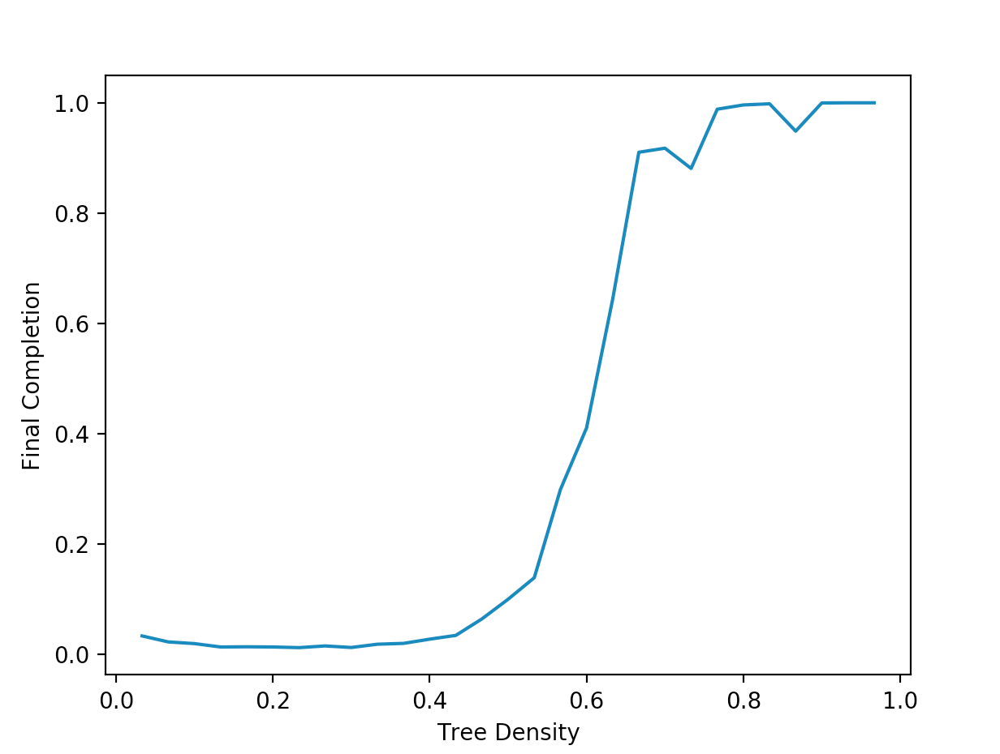
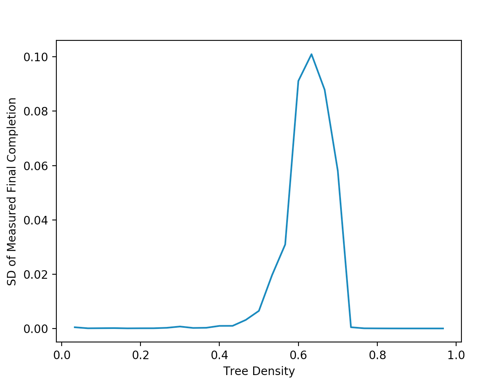

Getting Started With Inferno: Final Completion and Tree Density¶
In this introductory tutorial, we are going to show how to use Inferno to look at the relationship between tree density, and final completion, for a simple square-lattice based forest, and a simple cellular-automation simulator. [1]
First, let’s go over a few definitions. To start, a forest is defined as some graph, \(G = (V, E)\). Each node corresponds to some spatial position within the forest, and the edges specify how fire is allowed to spread over the nodes. For our simulation, we will be considering a very basic graph called a square lattice. We define a square lattice as follows: given some number \(N\), which we call the length of our lattice, we define a set \(N \), each \(N\) nodes such that for \(G \ \in \ H\), we have:
\(E(G) \ = \ \{(v_n, v_{n+1}) \ | \ v_i \ \in \ V\}\)
Let’s index the elements of \(H\) by \(i\), where \(G_i \ \in \ H\). We define the vertex set, \(V_{\ell}^N\), of our lattice graph to be:
\(V_{\ell}^N \ = \ \displaystyle\bigcup_{i = 1}^{N} V(G_i)\)
Continuing on, we define \(v_{i_{n}}\) to be the \(n\)-th vertex of the \(i\)-th linear graph. We define the edge-set of our lattice graph, \(E_{\ell}^N\), to be:
\(E_{\ell}^N \ = \ \Big( \displaystyle\bigcup_{i = 1}^{N} E(G_i) \Big) \ \cup \ \{ (v_{i_n}, v_{(i + 1)_n}) \ | \ v_{k_n} \ \in \ V_{\ell} \}\)
Thus, our square lattice graph of length \(N\) is given by \(G_{\ell}^{N} \ = \ (V_{\ell}^N, E_{\ell}^N)\) looks something like this:
PUT IMAGE HERE
So as you can see, our forest graph resembles a grid, with nodes being connected to each other in square cycles. We can do this fairly easily in Inferno, as a square lattice is one of the built-in graphs.
For our forest, we define a state function, \(\delta(v, t)\), for some \(v \in V(G)\), and some time-step \(t\) of our simulation. The state function is able to map each vertex in the forest to either \(1\) or \(0\). If the state function maps a vertex to \(1\), we say that at time \(t\), the node contains a tree.
For the purposes of this simple simulation, we will assume that \(\delta(v, 0) = \delta(v, t)\), for all \(t\). Basically, we assume that no new trees are growing (or somehow appearing) in our forest during the simulation. This simplifies our model greatly. Now, let’s consider what the values of \(\delta(v, t)\) will be for each \(v \ \in \ V_{\ell}\). It is possible to manualy specify the exact value of the function at every node, but for large graphs, this becomes cumbersome. Thus, Inferno allows us to randomize placement of trees onto our graph. Specifically, for some arbitrary forest, \(V\), we know that the total number of trees in this forest will be given as \(\rho(t)\), with:
\(\rho(t) \ = \ \displaystyle\sum_{v \ \in \ V} \delta(v, \ t)\)
For all \(v_n \ \in \ V\). We can thus choose some number \(\rho\), and randomly assign \(\delta(v_n) \ = \ 1\) for \(\rho\) vertices \(v_n\). Behind the scenes, the way that Inferno does this is by generating \(\rho\) pseudo-random coordinates, \((x, \ y)\), with \(1 \ \leq \ x, y \ \leq \ N\), and set \(\delta(v_{x_y}) \ = \ 1\) for all these number pairs. We define the tree density, \(\sigma\), of our graph as “another way” to write the total number of trees, as it is just the number of trees divided by the number of nodes:
\(\sigma \ = \ \dfrac{\rho}{|V(G)|}\)
This is the number that we will be feeding into our state function, which will be used in the simulation. In addition to the state function, we also must define an update function which is another function \(\beta: V \ \times \ T \ \rightarrow \ \{0, \ 1\}\), which tells us at some time \(t\), whether some vertex \(v\) has been “burned” by the simulation. Note that for some vertex \(w\), it can only be true that \(\beta(w, \ t) \ = \ 1\) if \(\delta(w, \ t) \ = \ 1\) (basically, a vertex can only “burn” at time \(t\) if it contains a tree at time \(t\)). In the simulation of our algorithm, we are going to implement a “cellular-automata-like” update rule, where for some \(w \ \in \ V\), if \(\beta(w, \ t) \ = \ 1\), then \(\beta(x, \ t + 1) \ = \ 1\) for all \(x \ \in \ (w)\). We then define:
\(U(w) \ = \ \{x \ | \ x \ \in \ N(w), \ \delta(x, \ t + 1) \ = \ 1\}\)
Where \(N(w)\) is defined to be the neighbourhood of \(w\):
\(N(w) \ = \ \{v \ | \ v \ \in \ V(G), \ (w, \ v) \ \in \ E(G)\}\)
In simpler language, fire can spread from a burning vertex to another vertex that is connected to the burning vertex, if the other vertex contains a tree. This is similar to the idea of a cellular-automaton spreading to grid squares that are a taxicab distance of \(1\) away from the original square (the Von Neumann neighbourhood of the original square). Thus, we call this particular function the Von Neumann cellular-automaton update function (this function is built-into Inferno as well).
In order for our simulation to actually begin, we are going to have to specify the value of \(\beta(v, \ 0)\) for all vertices \(v\). We call this set of values (particularly the special case of \(\beta\) at time eqaul to \(0\)) the initialization function. For this simulation, it makes sense for us to chooe some random vertex that contains a tree, and set its initial update function to one. We can do this eaily in Inferno (as random initialization is a built-in function).
Now, we can turn our attention to the problem we are actually trying to investigate. We are interested in determining how final completion of our graph changes with increasing tree density. Firstly, we define completion of some forest graph, at some time \(C(G, \ t)\) is defined as:
\(C(G, \ t) \ = \ \dfrac{1}{\rho(t)} \ \displaystyle\sum_{v \ \in \ V(G)} \ \beta(v, \ t)\)
Thee final completion is a specific instance of the completion, where \(t \ = \ T\), where \(T\) is the time-step of the simulation such that (for this specific simulation):
\(\beta(v, \ T) \ = \ \beta(v, \ T + 1)\)
for all \(v \ \in \ V\). Basically, the simulation terminates when the graph the update functions reaches a point where it remains constant for all future times. Note that this is only the termination condition for this specific instance of the update function, other update functions may remain constant for two or more iterations, and then change, but for this particular simulation, the update function must yield different parameter values at at least one node on any given time-step.
With all of this theory now out of the way, we can now begin creating our simulations! We are interested in varying tree density and plotting it against final completion of our graph. We start by importing all of the necessary dependencies:
# Imports the necessary dependencies
import inferno
from matplotlib import pyplot as plt
from tqdm import tqdm
I’m going to use matplotlib to make graphs of the results at the end of the simulation and tqdm to make a nice looking progeress bar when I run the simulations (this isn’t totally necessary, but I definitely reccomend it). Now, we can specify some initial variables. Firstly, we need to specify the length of our lattice graph. For this simulation, we will set that to \(30\). In addition, in order to calculate the final completion for each value of the tree density, we will need to run the simulation many times and take the average of those trials. We will set the number of iterations for each individual value of the tree density to \(20\). Finally, we create an empty list in which we will store all of the calculated values:
# Defines initial parameters and empty list to store final values
trials = 20
length = 30
y = []
Next, we will define the lattice graph (which, as we said, is one of the graphs that is built into Inferno):
# Creates the grid
lattice_graph = inferno.sgraph.SquareLatticeGraph(length=length)
Now, with the graph, we can define the big loop that we will use to run the simulation over and over:
for i in tqdm(range(1, length)):
sum = 0
for j in range(0, trials):
# Simulation trials happen here
Where we are essentially running through a bunch of possible tree densities (we are going up in units of “length of the graph”, instead of one-by-one, as we don’t want the simulation to go on forever), for the given number of trials. We use the variable sum in order to keep track of the outcomes of all our trials, which we then divide by the number of trials to get the average. Inside the loop, we now begin the simulation. For each trial, we reset the parameters of our graph. We also define init_number which is the number of trees that
burn at time zero, and the tree density:
# Resets the graph before each iteration of the simulation
lattice_graph.reset()
# Defines the necessary variables
init_number = 1
density = float(i/(length))
We now define our initialization, update, and state functions (since the particular functions we are using are basic, they are built into Inferno already):
# Defines the necessary functions used in the simulation
init_function = inferno.sim.initialize.Random_Init_Number(number=init_number)
state_function = inferno.sim.state.Density_State(density=density)
update_function = inferno.sim.update.Von_Neumann_CA_Basic()
We can now create the simulator object and run the simulation (which will return a simulation object):
# Creates the simulation object
simulator = inferno.Simulator(
graph=lattice_graph,
state_function=state_function,
burn_function=update_function,
init_function=init_function,
)
# Runs the simulation
results = simulator.simulate(termination=1e14)
Finally, we calculate the final completion of the graph:
# Calculates the completion of the final graph
final_graph = results.final_graph
completion = inferno.completion(final_graph)
sum += completion
Now, we exit the second loop and are inside the first loop. We calculate the average completion for all of our trials:
# Calculate the average completion for a given density and add it to the final list
y.append(float(sum / trials))
To end this simulation off, we exit the first loop, and graph the results using matplotlib:
# Plots the average completion against the tree density
plt.plot([i/length for i in range(1, length)], y)
plt.xlabel("Tree Density")
plt.ylabel("Final Completion")
plt.show()
When we run this simulation, we get a graph that looks something like this:
{kind=link}
So we are seeing that as we increase the density of trees, we eventually reach an inflection point where the completion spikes up and stabilizes for larger values. This kind of work could actually have somer interesting applications when it comes to fighting fires: if one could determine how close trees are together, then we can determine whether we are to the left of the inflection point, and can expect the fire to remain controllable, or if it is on the right side, where the fire can grow to large, uncontrollable sizes very quickly. It also might be interesting to investigate the variance of the trials for each individual tree density, and maybe come up with metrics that allow us to understand how “volatile” our forest is (where depending only on the initial point of ignition, the fire can be either a raging inferno or die out very quickly). We can actually do this fairly easily. Since the variance of some random variable (like final completion) is given by:
\(\sigma^2 \ = \ \langle C(G, \ T)^2 \rangle \ - \ \langle C(G, T) \rangle^2\)
All we have to do is sum up the squared value of each value of the final completion, then calculate the expectation value in the same manner as we calculate the “un-squared” expectation value in the previous simulation. We then plug the two values into this formula and plot the results, getting a graph that looks something like this:
{kind=link}
This suggets that our simulations are the most voaltile and unpredictable when the tree density is a bit over \(0.6\). There are practically infinite different scenarios and peices of data that can be learned from even simple simulations like the ones we did in this tutorial!